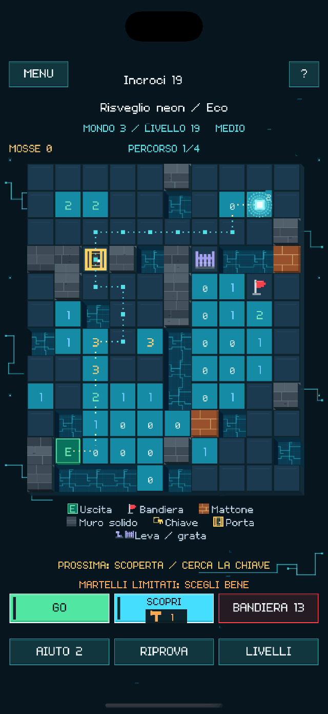
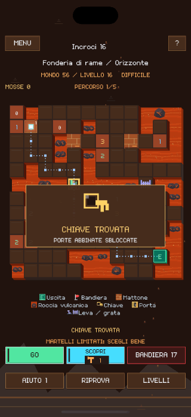
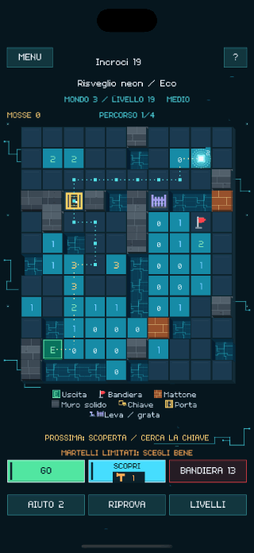

01
Prepara il percorso
Leggi i numeri, segnala le mine e trova una strada sicura.
Disponibile su Google Play e App Store
Leggi i numeri, segnala le mine e scopri un percorso sicuro fino all’uscita. Tu prepari il percorso. La luce lo segue.


Disponibile su Android e iOS
Leggi gli indizi, segnala le mine e guida una piccola luce attraverso percorsi sicuri e mondi pieni di enigmi.

Leggi i numeri, segnala le mine e trova una strada sicura.

Chiavi, portali e ostacoli rendono ogni mondo speciale.

Inizia con 60 puzzle gratuiti e sblocca il gioco completo quando vuoi.
Lumen Mine · YouTube
Guarda questo breve video di gioco ed esplora gli enigmi, i mondi e le schermate.
Esplora gratis i primi tre mondi. Un solo acquisto in-app sblocca il gioco completo, con 300 mondi e 6.000 rompicapi in totale.